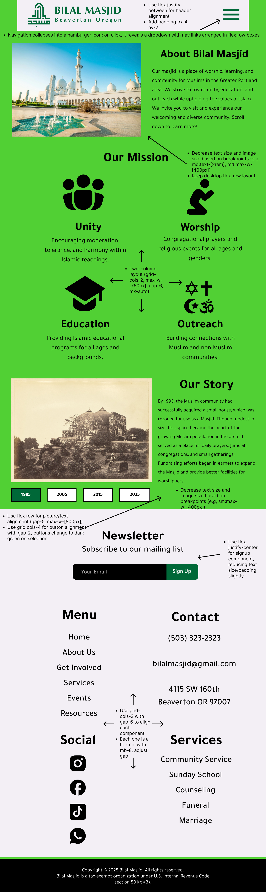

Improving usability, accessibility, and mobile responsiveness
Introduction
For as long as I can remember, the Bilal Masjid website has looked dated,
lacking modern usability features. The site's navigation is cluttered and its responsivity is nonexistent,
making it cumbersome for users on different devices.
Given these issues, I decided to focus on this webpage and aimed to give its
about section a modern, clean, and responsive design while ensuring better
accessibility for all users.
Problem Identification
For this project, I focused on redesigning the "About Us" webpage specifically due to its role as a key entry
point for
users unfamiliar with the mosque. The changes on this core webpage can serve as a model for improvements
across the website as a whole. Despite having limited content, the webpage divides the "About Us" section
into two subsections: About Us and History. Below are the main problems I identified about the webpage:
Efficiency Concerns
Cluttered and Inefficient Navigation: Users must sift through too many categories to
find key information, reducing efficiency.
Nested Content Requires Extra Clicks: Some information is unnecessarily hidden behind
multiple links (e.g., "About Us" requires an additional click to access "History").
Inconvenient Information Placement: Relevant details like prayer times are placed in
the sidebar instead of a central, easily conspicuous location.
Missing Dropdown Menus: Users must click through additional pages instead of accessing
categories via hover-based dropdowns (e.g., "Volunteer Sign-up" in "Outreach").
Site Isn't Responsive: The website appears zoomed out on mobile, forcing users to zoom
in manually and making buttons/text too small.
Learnability Concerns
Unclear Button Design: Buttons are not obviously clickable, causing confusion for
first-time users who rely on visual cues to understand interactivity (e.g., donation button lacks clear
styling).
Lack of Visual Hierarchy: No significant distinction between headings and body text,
making it difficult to differentiate sections.
Redundant and Ambiguous Menu Items: Vague sections (like "Information" in the left
sidebar) make navigation unclear, especially for new users.
Missing Clear Call-to-Action: Important actions (e.g., donating, signing up for events)
are not clearly emphasized, confusing first-time users.
Memorability Concerns
Unorganized Content Structure: Confusing or ambiguous content placement makes it hard
for returning users to remember where information is located.
Missing Visual Cues: Essential interactive components (e.g., dropdown menus, hover
highlights) are missing, making navigation harder to recall.
Inconsistent Terminology: Terms are used interchangeably, making navigation confusing
(e.g., "Zakat" vs. "Donations").
Lack of Recognizable Icons and Symbols: The website does not use common icons (e.g., a
magnifying glass for search), making it harder for users to recognize features.
Conceptual Model Concerns
Unexpected Navigation Placement: Users expect a central navbar, but side navigation
elements create unnecessary redundancy.
Deviation from Standard UI Patterns: Lack of dropdown menus, button highlights, and
intuitive text sizing makes navigation less predictable.
Inconsistent Section Labels: Cluttered navigation bar with unconventional headers
(e.g., both "Outreach" and "Zakat" combined with non-related headers like "PDX Islamic Library").
No Mobile-Friendly Adjustments: The website requires manual zooming on mobile, making
it difficult to interact with buttons and text.
Accessibility Concerns (WebAIM WAVE Report)
9 General Errors: Missing alt text on images, poor HTML structure, and unlabeled form
elements.
37 Low Contrast Errors: Text blends into the background, making reading difficult for
users with low vision or color blindness.
10 Alerts: Missing page regions and improper heading usage make navigation harder for
assistive technologies.
Missing ARIA Labels: Many components, such as search bars, buttons, and icons, lack
ARIA labels, making them inaccessible to screen reader users.
I completely agree with the results from the WebAIM WAVE Report. The webpage in its current form has
significant accessibility issues, particularly in terms of contrast, labeling, and structural clarity. Low
contrast poses a major challenge for visually impaired users. Missing labels like alt text prevent screen
readers from describing images. Lastly, poor hierarchy, missing page landmarks, and small, unreadable text
further worsen accessibility for those using assistive technologies. Addressing contrast, labeling,
structure, and text size would significantly improve this webpage’s accessibility.
Redesign Process
The redesign aimed to create a clean, accessible, and mobile-friendly webpage by merging the History and
About Us subsections into a single unified About Us page. To visualize the redesign and ensure consistency,
I created detailed mockups and a comprehensive design style
guide in Figma. The guide included typography standards, button styles, color palettes, and responsive
layouts. Mockups were designed for mobile, tablet, and desktop views to validate the responsive design
before implementation.
Design Style Guide
Desktop Mockup
Tablet Mockup

Mobile Mockup
How the Redesign Addresses Usability Issues
Streamlined Navigation: Implemented intuitive mobile navigation by grouping related
items in a
hamburger menu for mobile. Simplified content architecture by merging related sections (e.g., "About Us"
and "History"). Eliminated redundant sidebar elements to
reduce visual clutter.
Responsive and Mobile-Friendly Design: Adopted a mobile-first approach that ensures
optimal viewing across all devices. Increased tap target sizes and improved typography for mobile
readability. Pages now fluidly adapt to different screen dimensions through responsive collapsing and
realignment.
Improved Visual and Button Design: Designed consistent, interactive buttons with hover
states. Established clear visual hierarchy through thoughtful typography (size, weight, spacing) and
strategic use of bright, contrasting colors for primary action buttons ("Donate", "Volunteer").
Consistent Language and Icon Usage: Unified terminology across the interface to prevent
confusion. Implemented universally recognizable icons (e.g., search magnifier) accompanied by
descriptive labels.
Modern and Predictable UI Patterns: Incorporated contemporary conventions like
intuitive dropdown menus. Removed ambiguous or duplicate labels (e.g, zakat vs donations)
How the Redesign Addresses Accessibility Issues
Alt Text: Added comprehensive alternative text for all
meaningful images.
High Contrast and Readability: Deployed WCAG compliant color combinations (dark
greens against white) to maximize text legibility and visual comfort.
ARIA Labeling and Accessibility Enhancements: Enhanced interactive components (buttons,
form fields) with appropriate ARIA attributes for better screen reader interpretation.
Responsive Website
The redesigned website has been tested for responsiveness and accessibility across various devices and screen
sizes.
You can visit the live version of the redesigned website by clicking here.
To demonstrate responsive behavior, I recorded screen captures of the site on three different screen sizes:
desktop, tablet, and mobile. These recordings show how layout and functionality adapt smoothly across
devices. Additionally, I conducted a WebAIM WAVE accessibility report to ensure the site meets WCAG.
Desktop View (Macbook Pro)
Tablet View (iPad Air)
Phone View (iPhone Pro 14)
WAVE Accessibility Report
Reflection
This project improved my understanding of responsive design principles and the importance of accessibility in
designing web pages. From a technical standpoint, CSS Flexbox and Grid, along with media queries and tools
like clamp(), proved tremendously useful.